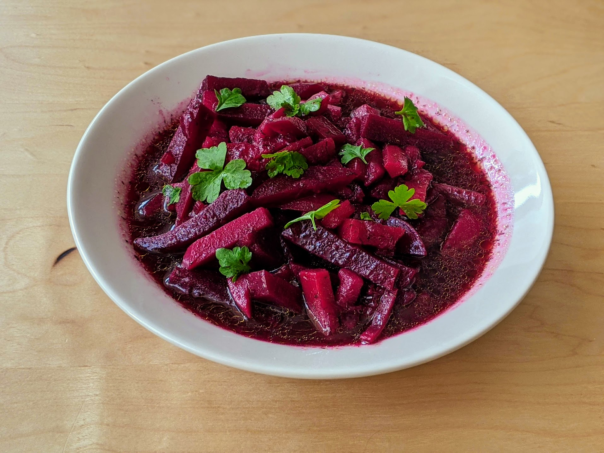

Soupe russe à la betterave

Pour 6 personnes, largement :
- Un citron
- Deux gros oignons
- Trois branches de céleri
- Quatre pommes de terre
- Cinq carottes
- Six betteraves (fraîches, de préférence)
- Sept petites gousses d'ail
- Vous avez vu cette magnifique progression arithmétique, un peu ?
- Sel, poivre, sucre, aneth et persil.
- (Si les betteraves sont sous vide, sauter cette étape.) Laver les betteraves, les poser dans une casserole d'eau froide et les cuire jusqu'à ce que ça soit mou, ce qui prend environ deux heures (on peut aussi faire ça à la cocotte-minute, auquel cas ça prend plutôt une demi-heure).
- Faire chauffer de l'huile d'olive dans une grande casserole. Éplucher les carottes et les oignons, laver le céleri et enlever les bouts.
- Couper les oignons en jardinière (ou les râper), les rajouter dans la casserole. Faire de même avec les carottes, puis le céleri. Laisser cuire une dizaine de minutes comme ça.
- Ajouter de l'eau froide dans la casserole et faire cuire à feu moyen. Pendant ce temps, éplucher et couper la betterave en jardinière, et les arroser avec le jus du citron.
- Éplucher et couper les pommes de terre en jardinière, puis ajouter dans l'eau bouillante des légumes. Les laisser trois minutes comme ça, puis ajouter la betterave.
- Saler, sucrer, poivrer, ajouter un peu de persil et une quantité outrageuse d'aneth.
- Sortir du feu, ajouter l'ail écrasé, et attendre que ça ait refroidi pour mettre au frigo. Servir frais.
Retour à la liste des recettes